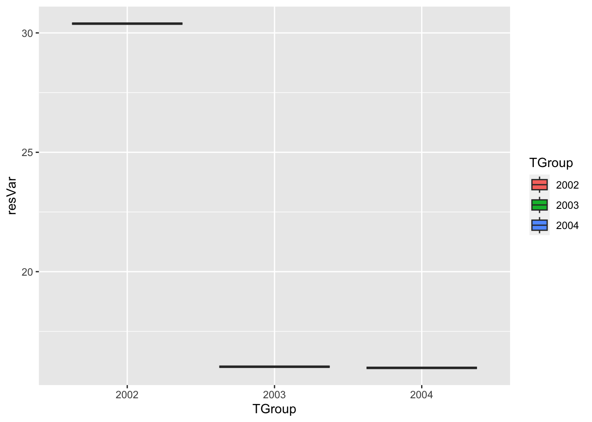

library(ggplot2) # for graphics
library(MASS) # for maximum likelihood estimation
library(dplyr)##
## Attaching package: 'dplyr'## The following object is masked from 'package:MASS':
##
## select## The following objects are masked from 'package:stats':
##
## filter, lag## The following objects are masked from 'package:base':
##
## intersect, setdiff, setequal, union# fit normal distribution to data + grab maximum likelihood estimators
z <- read.csv("Allen et al - Proceedings B Supplementary Data - Raw Data 3.csv",header=TRUE,sep=",")
z$myVar <-z$Mean.Unique.Units.per.Cycle
summary(z)## Year Mean.Unique.Units.per.Cycle Mean.Total.Units.per.Cycle
## Min. :2002 Min. :11.08 Min. :101.1
## 1st Qu.:2005 1st Qu.:16.25 1st Qu.:152.5
## Median :2008 Median :18.78 Median :170.8
## Mean :2008 Mean :20.04 Mean :172.2
## 3rd Qu.:2011 3rd Qu.:23.50 3rd Qu.:204.1
## Max. :2014 Max. :29.75 Max. :228.0
##
## Mean.Song.Cycle.Length..m. Mean.Themes Mean.Phrase.Length
## Min. : 4.253 Min. :2.780 Min. :12.96
## 1st Qu.: 6.328 1st Qu.:3.750 1st Qu.:14.60
## Median : 7.450 Median :4.310 Median :15.93
## Mean : 7.196 Mean :4.505 Mean :16.25
## 3rd Qu.: 7.713 3rd Qu.:4.920 3rd Qu.:16.31
## Max. :11.060 Max. :6.860 Max. :22.67
##
## mean.PCA.of.Themes Total.Score Song.Level.Score Theme.Level.Score
## Min. :-1.15876 Min. :-3.2997 Min. :-2.5206 Min. :-2.4552
## 1st Qu.:-0.50409 1st Qu.:-1.4860 1st Qu.:-1.6282 1st Qu.:-0.5603
## Median :-0.13506 Median :-0.4777 Median : 0.1094 Median :-0.2084
## Mean :-0.05374 Mean : 0.0000 Mean : 0.0000 Mean : 0.0000
## 3rd Qu.: 0.49235 3rd Qu.: 1.4054 3rd Qu.: 1.4188 3rd Qu.: 0.4083
## Max. : 0.92238 Max. : 3.3521 Max. : 2.5897 Max. : 3.1775
##
## Song.Level.Entropy Theme.Level.Entropy Individuality myVar
## Min. :0.03744 Min. :0.7253 Min. :12.28 Min. :11.08
## 1st Qu.:0.14788 1st Qu.:0.9425 1st Qu.:25.96 1st Qu.:16.25
## Median :0.26520 Median :1.0102 Median :31.44 Median :18.78
## Mean :0.27329 Mean :1.1955 Mean :34.30 Mean :20.04
## 3rd Qu.:0.34729 3rd Qu.:1.3715 3rd Qu.:39.14 3rd Qu.:23.50
## Max. :0.61224 Max. :1.8287 Max. :60.52 Max. :29.75
## NA's :2# get stats (mean + sd) of mean.unique.units.per.cycle from Allen et al.
normPars <- fitdistr(z$myVar,"normal")
print(normPars) # mean is 20.038462 , sd is 1.014290## mean sd
## 20.038462 5.171887
## ( 1.434423) ( 1.014290)str(normPars)## List of 5
## $ estimate: Named num [1:2] 20.04 5.17
## ..- attr(*, "names")= chr [1:2] "mean" "sd"
## $ sd : Named num [1:2] 1.43 1.01
## ..- attr(*, "names")= chr [1:2] "mean" "sd"
## $ vcov : num [1:2, 1:2] 2.06 0 0 1.03
## ..- attr(*, "dimnames")=List of 2
## .. ..$ : chr [1:2] "mean" "sd"
## .. ..$ : chr [1:2] "mean" "sd"
## $ n : int 13
## $ loglik : num -39.8
## - attr(*, "class")= chr "fitdistr"zMean <- normPars$estimate["mean"] # note structure of getting a named attribute -> mean is 20.61364 (as stated above)
zSD <- normPars$estimate["sd"]
# Using data from Allen et al., 2018 - mean unique units per cycle
# generate random normal data with the mean and sd from that dataset
counts <- rnorm(n=3,mean=zMean,sd=zSD)
years <- c("2002","2003","2004")
# make that normal data into a data frame
normz <- data.frame(years,counts)
print(normz)## years counts
## 1 2002 30.26881
## 2 2003 16.14408
## 3 2004 16.56853# setting up one-way ANOVA - just the first 3 years
nGroup <- 3
nName <- c("2002","2003","2004") # names of groups
nSize <- c(1,1,1) # number of observations in each group
# get the mean + sd
# 2002
year <- normz[normz$years=="2002",]
print(year)## years counts
## 1 2002 30.26881summary2002 <- summary(year[,"counts"])
print(summary2002)## Min. 1st Qu. Median Mean 3rd Qu. Max.
## 30.27 30.27 30.27 30.27 30.27 30.27mean2002 <- summary2002["Mean"]
print(mean2002)## Mean
## 30.26881sd2002 <- sd((year[,"counts"]))
print(sd2002)## [1] NA# 2003
year <- normz[normz$years=="2003",]
print(year)## years counts
## 2 2003 16.14408summary2003 <- summary(year[,"counts"])
print(summary2003)## Min. 1st Qu. Median Mean 3rd Qu. Max.
## 16.14 16.14 16.14 16.14 16.14 16.14mean2003 <- summary2003["Mean"]
print(mean2003)## Mean
## 16.14408sd2003 <- sd((year[,"counts"]))
print(sd2003)## [1] NA# 2004
year <- normz[normz$years=="2004",]
print(year)## years counts
## 3 2004 16.56853summary2004 <- summary(year[,"counts"])
print(summary2004)## Min. 1st Qu. Median Mean 3rd Qu. Max.
## 16.57 16.57 16.57 16.57 16.57 16.57mean2004 <- summary2004["Mean"]
print(mean2004)## Mean
## 16.56853sd2004 <- sd((year[,"counts"]))
print(sd2004)## [1] NA# I am gettng NA for SD because there's really only one value which IS the mean, so I'm just going to assign random values
sd2002 <- 3
sd2003 <- 2
sd2004 <- 1
# adjusting the means of different groups!
# mean2002 <- 15.1
# mean2003 <- 15.2
# mean2004 <- 15.3
ID <- 1:(sum(nSize)) # ID vector for each row (sum of the number of observations) - the overall number of rows we need!
resVar <- c(rnorm(n=nSize[1],mean=mean2002,sd=sd2002),
rnorm(n=nSize[2],mean=mean2003,sd=sd2003),
rnorm(n=nSize[3],mean=mean2004,sd=sd2004))
# doing the ANOVA
TGroup <- rep(nName,nSize) # repeating the name by the number
ANOdata <- data.frame(ID,TGroup,resVar) #
str(ANOdata)## 'data.frame': 3 obs. of 3 variables:
## $ ID : int 1 2 3
## $ TGroup: chr "2002" "2003" "2004"
## $ resVar: num 30.4 16 16print(ANOdata)## ID TGroup resVar
## 1 1 2002 30.38872
## 2 2 2003 16.01772
## 3 3 2004 15.96990# make graph
ANOPlot <- ggplot(data=ANOdata,aes(x=TGroup,y=resVar,fill=TGroup)) +
geom_boxplot()
print(ANOPlot)
# Adjust the means of different groups: if I raise the means of all groups to 25, the ANOVA looks more uniform but still follows the same trend. If I lower the means of all groups to 15, it still seems to follow the same trend for the first 2 groups, but the last group's (2004) resVar skyrockets (not sure why). If I make mean2002 5, mean2003 15, and mean2004 25, the resVars follow the same trend. If the means are within 0.1 of each other, there still appears to be some significant difference, but with means within 0.01 of each other there is none.
# Adjust the sample sizes of different groups: by adjusting the sample size down to 3 per group, I see more of a significant difference between the 3 groups. Even given a sample size one 1, I see significance.